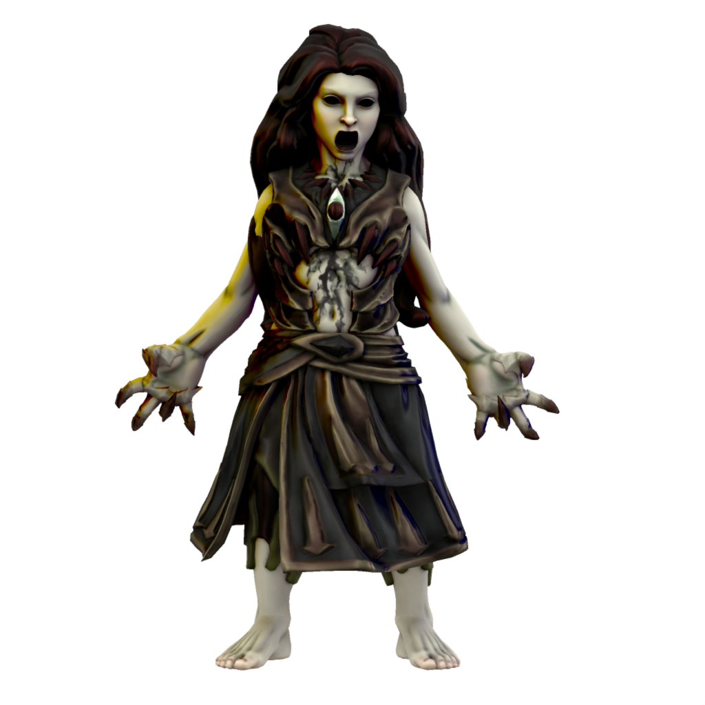

Lilit
Malefix of wrath

Lilit manifests from the righteous anger of those who have been wronged. She is particularly popular among victims of sexual and domestic violence, who turn to her seeking vengeance upon their abusers. While Lilit rarely responds to their pleas, beseaching her will often draw the Lilitun to them.
🡐 Malefices